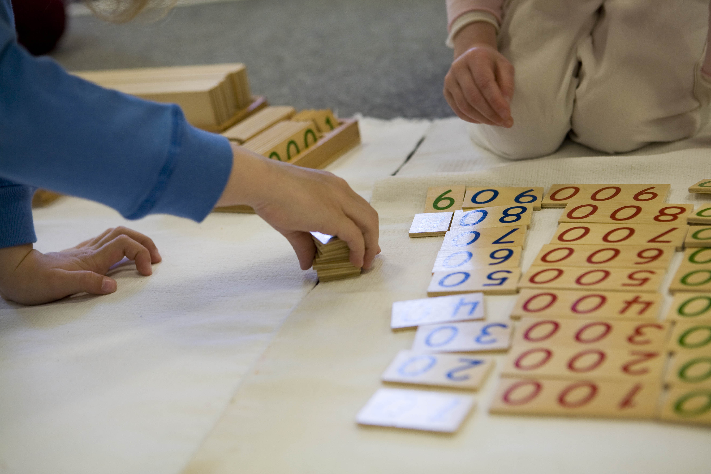
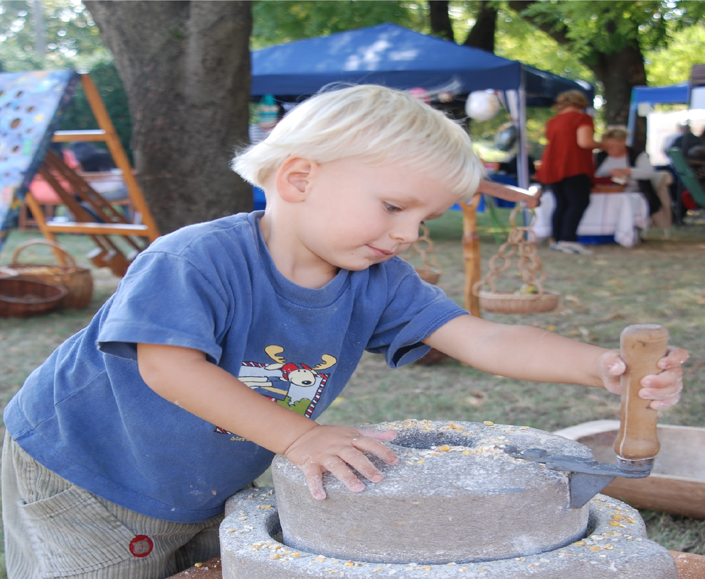

Élménypedagógia.com

„Segíts nekem, hogy magam legyek képes rá!”
Maria Montessori (1870-1952) az első női orvos Olaszországban, pszichológus, az egyik legismertebb európai reformpedagógiai irányzat meglapítója. Elvei szerint nem tanítani kell a gyerekeket, hanem alkalmat adni rá, hogy maguktól tanuljanak saját tapasztalataik során. Míg az olvasott tudás pusztán 10%-a marad meg tartósan az emlékezetünkben, úgy a megtapasztalt tartalmak 90%-a.
Maria Montessori szerint a gyermek pszichéje és ezáltal tanulási képessége is különbözik a felnőttétől. Míg a felnőtt megkísérli emlékezetébe vésni az ismereteket, addig a gyerek magába szívja, abszorbeálja. Az „abszorbeáló gyermeki lélek” a Montessori pedagógia egyik sajátos alapfogalma.
A felnőtt feladata nem a gyerekek/fiatalok tanítása a hagyományosan vett értelemben, hanem ezt a veleszületett abszorbeáló késztetés kielégítései, spontán tanulási tevékenységükhöz megfelelő környezetet biztosítása. Amíg nem veszik el tőle a kedvét, addig a gyermek veleszületett kíváncsisággal fordul a világ felé, mindent meg akar fogni, szagolni, kóstolni, tapasztalni, szétszedni, befesteni, átalakítani, saját világát életre kelteni, alkotni. Ki ne ismerné a három évesek „Miért?” korszakát. De hová lesz később a sok miért? Miért nem lesznek megválaszolva? Miért vesszük el a kedvüket a további miértektől?
Montessori szerint nem szükséges, hogy elvesszen a világ felé forduló nyitottság, a kíváncsiság. Minden gyerek saját fejlődési késztetéssel születik a világba, egy egyéni programmal, mely alapján lépésről lépésre fedezi fel a világát. Saját ütemében és saját terve szerint, melybe ha beleszólunk, csak kárt okozunk

A gyermek fejlődését különböző, kizárólag egyéni fogékonysági fázisok jellemzik: Bizonyos ingerek felfogására, ismeretek elsajátítására fejlettségének egy adott szakaszában intenzívebben képes. Ez az érzékenység egyénenként különböző időpontban jelentkezik. A szakaszoknak megfelelően a gyermeket érdeklődése, akarata viszi előre a megismerési folyamatban. A fejlődés során ablakok tárulnak ki a világra – és ha nem kapnak kellő táplálékot, újból becsukódnak, dolguk végezetlenül.
Maria Montessori teljes mértékben tisztelte a gyermek egyéni szabadságát. Nem akarta mozgásában korlátozni, padokba kényszeríteni, csöndre és magányra kárhoztatni a felfedezései során. Nemcsak a Montessori óvodákban, de még az iskolában is szabadon mozoghatnak, leülhetnek a földre, hasalva írhatnak vagy rajzolhatnak. A gyerekek szabják meg, hogy mivel (milyen tantárgy) és kivel (melyik társukkal) szeretnének dolgozni. Mindent szabad, ami mások szabadságát és személyiségi jogait nem sérti! Vagyis a verbális vagy fizikai agresszió, a csoport érdekeinek megsértése (pl. rongálás, túlzott hangoskodás) tilos, így szabva természetes határt az egyén viselkedésének.
Az iskolai, nevelői értékelés nem szabad, hogy megrongálja a gyermek önbizalmát és elvegye a további kísérletezési kedvét, mint például a hagyományos iskolai bizonyítványok esetében. Montessori iskolákban ezért jegyek helyett szöveges értékelést kapnak a tanulók. Hiszen nem lehet előre meghatározni egy objektív mércét, melyhez, mint egy colstokhoz, a gyerekek fejlődése hozzámérhető.
A Montessori iskolák nem akarnak tudás és kor szerint homogén csoportokat létesíteni, hanem a kisebb tanul a nagyobbaktól, és persze fordítva. A hagyományos osztálykeretek helyett kor és tudás szerint is vegyes tanulócsoportokban (vagy párokban) tanulnak. Hiszen teljesen valóságtól elrugaszkodott az az elképzelés, hogy egy egész osztálynyi gyerek egyszerre tanul meg olvasni, ugyanazon a szinten tud számolni, festeni és tornázni. A Montessori elvek szerint nem probléma, ha csak 3. osztályos korára képes szótagolás nélkül olvasni, miközben matematikából vagy a művészetekben már haladó szinten van. Olyan tanulási környezetet kell minden gyerek számára megteremteni, ahol egyedi fejlődési ütemének megfelelően tanulhat.
A legfontosabb Montessori alapelvek röviden a következőek:
- Ösztönző környezetet megteremtése a gyermek immanens fejlődési programjának kielégítése céljából.
- A gyermek szabadságának és önállóságának tiszteletben tartása.
- A gyermek joga a felfedezéshez, megtapasztaláshoz, az örömteli tanuláshoz.
- A gyermek fejlődése előtti akadályok elhárítása, a lehetőségeinek teljes kimerítése, a fejlődés aktuális szakaszának megfelelően. Mind a túlterhelés, mind az alulterhelés káros.
- Szabadságának tiszteletben tartása abban az értelemben is, hogy amit el tud végezni, azt ne végezzük el helyette.
- Hagyjuk a saját tapasztalatok megszerzését, hisz hibáink is a tanulás részét képezik!